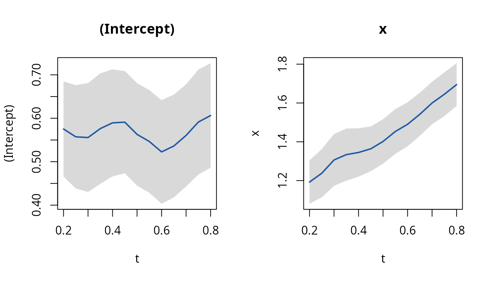

Overview
A longitudinal covariate is rarely measured at the time you need it.
skmle handles that mismatch by weighting each observation
according to how far its measurement time sits from the time being
modelled, rather than carrying a value forward or smoothing the
covariate and substituting it.
Two outcome types are covered.
Survival outcomes, where the covariate is observed sparsely and intermittently over follow-up:
-
skmle()for the general transformed hazards model. -
kee_cox()for the proportional hazards estimating-equation approach. -
kee_additive()for the additive hazards estimating-equation approach.
Asynchronous longitudinal outcomes, where the outcome is itself a sparsely observed process recorded on a time grid that does not line up with the covariate’s:
-
kee_async()for time-invariant coefficients. -
kee_async_td()for a coefficient curve \(\beta(t)\).
This vignette walks through both: simulate data, fit a model, inspect the summary output, plot the estimated baseline component, select a bandwidth by cross-validation, then move to the asynchronous longitudinal setting.
Which function do I need?
Two questions.
First, what is the outcome? A time to an event (death, relapse, failure), possibly censored? Use the survival estimators; your data is one long table. Or a repeatedly measured quantity (a score, a lab value) recorded on its own schedule? Use the asynchronous estimators; your data is two tables.
Then:
| Outcome | Situation | Function |
|---|---|---|
| Survival | Start here; Cox model | kee_cox() |
| Survival | Additive hazards instead | kee_additive() |
| Survival | Want the baseline hazard, or a model between the two | skmle() |
| Survival | Choose the bandwidth properly | skmle_cv() |
| Longitudinal | Start here; one constant effect | kee_async() |
| Longitudinal | Choose the bandwidth properly | kee_async_cv() |
| Longitudinal | The effect may change over time | kee_async_td() |
Every fitting function picks a bandwidth for you if you do not supply
one, and says in a message what it chose. That is enough for a first
answer; the _cv() functions choose it from the data, which
is what to report.
Simulating some data
set.seed(123)
dat <- sim_skmle_data(
n = 80,
mu = function(tt) 8 * (0.75 + (0.5 - tt)^2),
mu_bar = 8,
alpha = function(tt) 0.5 * 0.75 + 0.75 * (tt * (1 - sin(2 * pi * (tt - 0.25)))),
beta = c(1, -0.5),
s = 0,
cen = 0.7
)
head(dat)
#> # A tibble: 6 × 6
#> id X delta covariates[,1] [,2] obs_times censoring
#> <chr> <dbl> <lgl> <dbl> <dbl> <dbl> <dbl>
#> 1 1 0.805 TRUE -0.714 0 0.129 0.930
#> 2 1 0.805 TRUE -0.916 0 0.217 0.930
#> 3 1 0.805 TRUE -0.916 0 0.247 0.930
#> 4 1 0.805 TRUE -0.387 0 0.433 0.930
#> 5 1 0.805 TRUE -0.0782 0 0.798 0.930
#> 6 2 0.504 TRUE 0.402 1 0.288 0.865The simulated data are stored in long format. Each row corresponds to one observed longitudinal measurement time for one subject.
The key columns are:
-
id: subject identifier -
X: observed event or censoring time -
delta: event indicator -
covariates: observed covariate values at that visit time -
obs_times: longitudinal observation time
Fitting the general transformed hazards model
The covariates column returned by
sim_skmle_data() is a matrix. You can either use it
directly in the formula or split it into separate columns. Using the
matrix directly is convenient for routine work.
fit_skmle <- skmle(
Surv(X, delta) ~ covariates,
data = dat,
id = id,
obs_times = obs_times,
s = 0,
h = 0.5,
nknots = 3
)
fit_skmle
#> Call:
#> skmle(formula = Surv(X, delta) ~ covariates, data = dat, id = id,
#> obs_times = obs_times, s = 0, h = 0.5, nknots = 3)
#>
#> Coefficients:
#> covariates1 covariates2
#> 0.9215573 -0.5463503The printed object gives the fitted coefficients. As in many R model
objects, the formatted inferential output is produced by
summary().
summary(fit_skmle)
#> Call:
#> skmle(formula = Surv(X, delta) ~ covariates, data = dat, id = id,
#> obs_times = obs_times, s = 0, h = 0.5, nknots = 3)
#>
#> n= 80
#>
#> Estimate Std. Error z value Pr(>|z|)
#> covariates1 0.92156 0.31342 2.9403 0.003279 **
#> covariates2 -0.54635 0.34045 -1.6048 0.108543
#> ---
#> Signif. codes: 0 '***' 0.001 '**' 0.01 '*' 0.05 '.' 0.1 ' ' 1
#>
#> Log-likelihood: -0.0753The summary table reports:
- coefficient estimates
- standard errors
- z statistics
- p-values
Plotting the baseline
plot(fit_skmle)
This plot visualizes the estimated nonparametric baseline component from the sieve fit.
The specialised estimating equations
When the model of interest matches one of the specialized settings, the package also provides dedicated estimating-equation estimators.
Cox-type
fit_kee_cox <- kee_cox(
Surv(X, delta) ~ covariates,
data = dat,
id = id,
obs_times = obs_times,
h = 0.5
)
summary(fit_kee_cox)
#> Call:
#> kee_cox(formula = Surv(X, delta) ~ covariates, data = dat, id = id,
#> obs_times = obs_times, h = 0.5)
#>
#> Cox-type proportional hazards, kernel estimating equation (half kernel)
#> n= 80 subjects bandwidth h = 0.5
#>
#> Estimate Std. Error z value Pr(>|z|)
#> covariates1 0.85832 0.29253 2.9341 0.003345 **
#> covariates2 -0.49833 0.34661 -1.4377 0.150516
#> ---
#> Signif. codes: 0 '***' 0.001 '**' 0.01 '*' 0.05 '.' 0.1 ' ' 1Additive hazards
For the additive hazards estimator, simulate data under
s = 1.
set.seed(456)
dat_add <- sim_skmle_data(
n = 80,
mu = function(tt) 8 * (0.75 + (0.5 - tt)^2),
mu_bar = 8,
alpha = function(tt) 0.75 + 0.75 * (tt * (1 - sin(2 * pi * (tt - 0.25)))),
beta = c(1, -0.5),
s = 1,
cen = 0.7
)
fit_kee_add <- kee_additive(
Surv(X, delta) ~ covariates,
data = dat_add,
id = id,
obs_times = obs_times,
h = 0.5
)
summary(fit_kee_add)
#> Call:
#> kee_additive(formula = Surv(X, delta) ~ covariates, data = dat_add,
#> id = id, obs_times = obs_times, h = 0.5)
#>
#> Additive hazards, kernel estimating equation (half kernel)
#> n= 80 subjects bandwidth h = 0.5
#>
#> Estimate Std. Error z value Pr(>|z|)
#> covariates1 1.19769 0.52669 2.2740 0.02297 *
#> covariates2 0.26643 0.68259 0.3903 0.69630
#> ---
#> Signif. codes: 0 '***' 0.001 '**' 0.01 '*' 0.05 '.' 0.1 ' ' 1Selecting a bandwidth
Bandwidth selection can be handled by skmle_cv().
set.seed(999)
cv_fit <- skmle_cv(
Surv(X, delta) ~ covariates,
data = dat,
id = id,
obs_times = obs_times,
s = 0,
K = 3,
h_grid = c(0.3, 0.4, 0.5),
nknots = 3,
quiet = TRUE
)
cv_fit$h_cv
#> [1] 0.3
cv_fit$cv_results
#> # A tibble: 3 × 2
#> h cvloss
#> <dbl> <dbl>
#> 1 0.3 0.551
#> 2 0.4 0.586
#> 3 0.5 0.602The returned object contains:
- the selected bandwidth
- the refitted
skmlemodel at that bandwidth - the cross-validation loss table
You can then inspect the final refit in the usual way.
summary(cv_fit$fit)
#> Call:
#> skmle::skmle(formula = Surv(X, delta) ~ covariates, data = dat,
#> id = id, obs_times = obs_times, s = 0, nknots = 3, h = 0.3)
#>
#> n= 80
#>
#> Estimate Std. Error z value Pr(>|z|)
#> covariates1 1.06391 0.34671 3.0686 0.002151 **
#> covariates2 -0.53609 0.38391 -1.3964 0.162594
#> ---
#> Signif. codes: 0 '***' 0.001 '**' 0.01 '*' 0.05 '.' 0.1 ' ' 1
#>
#> Log-likelihood: 0.06305Half kernel or full kernel
Every estimator weights a covariate observation by how far it sits
from the time being modelled. By default that window is
one-sided: only observations strictly before the time
contribute, which is the risk-set restriction of a hazard model. Set
one_sided = FALSE to smooth the covariate path from both
sides instead.
fit_full <- kee_cox(
Surv(X, delta) ~ covariates,
data = dat, id = id, obs_times = obs_times,
h = 0.5, one_sided = FALSE
)
cbind(half = coef(fit_kee_cox), full = coef(fit_full))
#> half full
#> covariates1 0.8583207 0.7803046
#> covariates2 -0.4983319 -0.5343272The switch reaches the risk-set averages inside the C++ backend as
well as the row weights, so the two halves of the estimator always use
the same support. skmle_cv() takes it too, so the bandwidth
is selected under the same kernel the final fit uses.
Asynchronous longitudinal data
The estimators above model a survival outcome. When the outcome is itself a sparsely observed longitudinal process, measured at times that do not line up with the covariate’s measurement times, use the kernel-weighted estimating equations of Cao, Zeng and Fine (2015). Nothing is carried forward and no pair is discarded: each (response, covariate) pair contributes in proportion to its time separation.
set.seed(202)
d <- sim_async_data(n = 300, beta = c(0.5, 1.5))
head(d$y, 3)
#> # A tibble: 3 × 3
#> id time y
#> <int> <dbl> <dbl>
#> 1 1 0.204 0.306
#> 2 1 0.330 0.430
#> 3 1 0.368 0.298
head(d$x, 3)
#> # A tibble: 3 × 3
#> id time x
#> <int> <dbl> <dbl>
#> 1 1 0.0763 -0.466
#> 2 1 0.198 -0.835
#> 3 1 0.219 -0.688The two tables are deliberately separate. They sit on different
grids, so no single data frame holds both without inventing rows. The
formula spans both: its left-hand side is looked up in
data_y, its right-hand side in data_x, and
id and time name columns present in each.
fit_a <- kee_async(d$y, d$x,
y ~ x,
id = id, time = time, h = 0.25
)
summary(fit_a)
#> Call:
#> kee_async(data_y = d$y, data_x = d$x, formula = y ~ x, id = id,
#> time = time, h = 0.25)
#>
#> Asynchronous longitudinal regression (identity link, full kernel)
#> n= 300 subjects bandwidth h = 0.25
#>
#> Estimate Std. Error z value Pr(>|z|)
#> (Intercept) 0.610058 0.065411 9.3266 < 2.2e-16 ***
#> x 1.336571 0.057907 23.0815 < 2.2e-16 ***
#> ---
#> Signif. codes: 0 '***' 0.001 '**' 0.01 '*' 0.05 '.' 0.1 ' ' 1
#>
#> Optimization status: 0
confint(fit_a)
#> 2.5 % 97.5 %
#> (Intercept) 0.4818555 0.7382607
#> x 1.2230761 1.4500656The bandwidth is the one consequential choice.
kee_async_cv() selects it by cross-validation over
subjects, scoring each candidate by the kernel-weighted squared error on
the held-out subjects:
cv <- kee_async_cv(d$y, d$x,
y ~ x, id = id, time = time,
h_grid = c(0.10, 0.15, 0.25, 0.40), K = 5, seed = 1, quiet = TRUE
)
#> Warning: the selected bandwidth is at an endpoint of 'h_grid'; widen the grid
#> to check that the minimum is interior
cv
#> Call:
#> kee_async_cv(data_y = d$y, data_x = d$x, formula = y ~ x, id = id,
#> time = time, h_grid = c(0.1, 0.15, 0.25, 0.4), K = 5, seed = 1,
#> quiet = TRUE)
#>
#> 5-fold subject-level cross-validation
#>
#> # A tibble: 4 × 3
#> h cvloss nfold_used
#> <dbl> <dbl> <dbl>
#> 1 0.1 1.09 5
#> 2 0.15 1.16 5
#> 3 0.25 1.27 5
#> 4 0.4 1.42 5
#>
#> Selected h = 0.1
#>
#> Coefficients at the refit:
#> (Intercept) x
#> 0.6264998 1.3661731If the coefficients themselves vary with time,
kee_async_td() estimates the curve \(\beta(t)\) pointwise. Both time arguments
are smoothed there, so it converges at the bivariate rate \((n h_1 h_2)^{1/2}\) and the bands are
wide.
set.seed(203)
dt <- sim_async_data(
n = 500, beta = function(tt) cbind(0.5, 1 + tt),
lambda_y = 8, lambda_x = 8,
x_cov = function(s, t) exp(-4 * (s - t)^2)
)
fit_td <- kee_async_td(dt$y, dt$x,
y ~ x, id = id, time = time,
times = seq(0.2, 0.8, by = 0.05), h = 0.2
)
plot(fit_td)
The asynchronous article covers this properly: why
last-value-carried-forward and regression calibration fail here, how to
read the bandwidth diagnostics, and what the half kernel changes.
A typical workflow
For routine use, the usual sequence is:
- Prepare data in long format with one row per observation time.
- Fit
skmle()if you want the general transformed hazards model. - Use
summary()andplot()to inspect the fitted model. - Use
skmle_cv()if you want data-driven bandwidth selection. - Use
kee_cox()orkee_additive()when the scientific model matches those specialized estimators. - Use
kee_async()orkee_async_td()when the outcome is longitudinal rather than a survival time.
This gives a standard R model-fitting interface while keeping the core numerical work in the Rcpp backend.